The following examples illustrate the various ways in which you can use sub-circuits and multi-sheet designs to split your project into logical blocks. There are also examples of how to re-use these blocks in the same design and also across different Proteus projects.
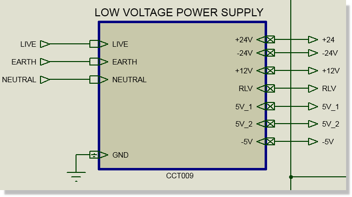
An example of a logical block encapsulated in a sub-circuit.
Here we have added a sub-circuit on the parent sheet of the schematic and then added and named the ports on the sub-circuit body. We've connected all the ports to input or output terminals and given everything a sensible name. This is all covered previously in the basics of sub-circuits.
The next step is to right click on the sub-circuit, enter the child sheet and then design a block of circuitry that performs the logical function of the sub-circuit. The key thing to remember is that you 'join up' the signals on the child sheet to the ports on the sub-circuit by naming the terminals with the port names.
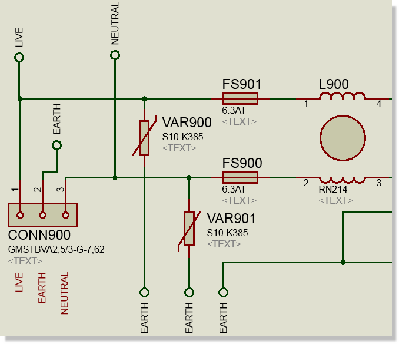
Terminal names matching the names on the ports transfer connections up and down the design hierarchy.
Everything connected inside a sub-circuit is local to that sub-circuit with the exception of nets of type POWER.
A power net is denoted by the use of a terminal of type POWER or GND. Nets with the names VCC and GND are always of type POWER.
Power nets are default design global so that you don't have to wire up and down through lots of sub-circuits.
As an example, the terminals above are all local and are wired up through the sub-circuit ports into the parent sheet. The terminals below are design global (using POWER terminals).
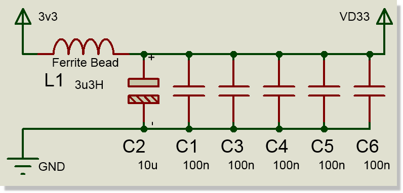
Power terminals default to being design global
If you want to use power terminals but still wire everything up between sub-circuits then you can un-check the Global Power Nets options from the Design Properties on the Design Menu.
If a block of circuitry does a single job, it's best in a sub-circuit.
Decide early how you want to handle power nets for your project. You can either have them all global to the design or you can have them local to a sheet. If you want global power nets (convenience) then use power terminals. If you want them local (explicit wiring) then either use default terminal types or un-check the global power nets option.
To connect from the sub-circuit to the parent sheet wire to a terminal and give the terminal the same name as the port on the parent sheet.
One of the nicer properties of a sheet is that it can contain an annotation base. This allows you to separate the annotation of parts contained in one sheet from that on a second sheet. The process is simple.
Place the sub-circuit, attach and name the ports in the usual way.
Enter the sub-circuit and then visit Design Menu -> Edit Sheet Properties command.
Change the initial annotation for the sub-circuit (e.g to 500)
Place and wire circuitry in the usual way.
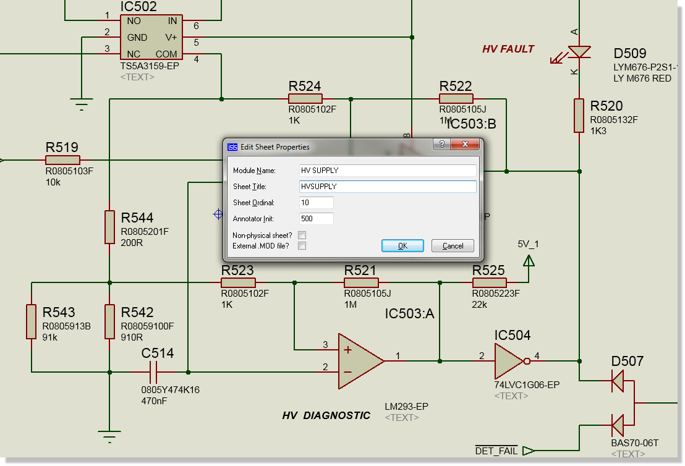
Initial annotation set to 500 sets an annotation base for components placed on that sheet.
If you have placed components and then decide that you want a base annotation for the sheet later, simply use the annotator in global mode and set the initial annotation count.
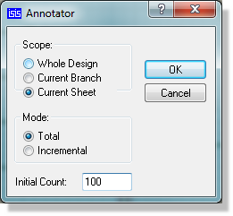
Global Annotator set to Current sheet and Total mode.
Note that sub-circuit annotation will typically not survive re-annotation from the layout. ARES has a command for annotating the board in a physical way (e.g. top left to bottom right) and this will re-annotate the schematic automatically. You can choose to have the logical annotation preserved by selecting the 'Use Sheet Offsets' checkbox in the ARES annotator.
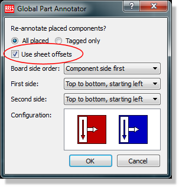
Sheet Offset in the Annotator maintains the schematic annotation at the expense of directional flow on the physical layout
The Global Annotator is used to batch annotate designs, but it can also be used to annotate only a branch of a design. A branch of the design is considered to be the current sheet downwards in the hierarchy.
Re-annotating in branch mode will:
1) Set the initial count of the current sheet to the annotation specified on the dialogue form.
2) Annotate the current sheet and then propagate downwards though any child sheets.
3) Preserve any initial annotation counts specified in child sheets.
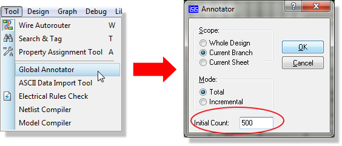
Branch Scope, Total mode will annotate downwards in a hieirarchy.
This mode is ideally suited to re-annotating after a copy and paste of a sub-circuit hierarchy.
Suitable for duplication of sub-circuits containing sub-circuits (multi-level hierarchy). Project clips are single sheet only!
Suitable for re-use between projects.
Simple and easy to use.
Create the Project Clip and store to disk.
Place a sub-circuit, along with it's ports and then name the Sheet and Circuit appropriately.
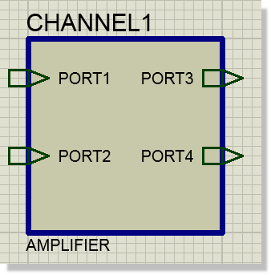
Select and block copy the sub-circuit as many times as you need and then rename the sheets. Do not rename the circuit as this is the binding.
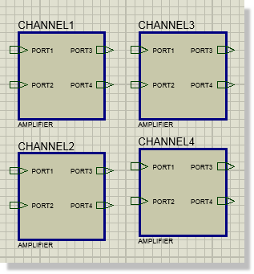
Enter the first sub-circuit (CHANNEL1 in our example) and import the Project Clip. This will populate and correctly annotate all of the other sub-circuit channels as well.
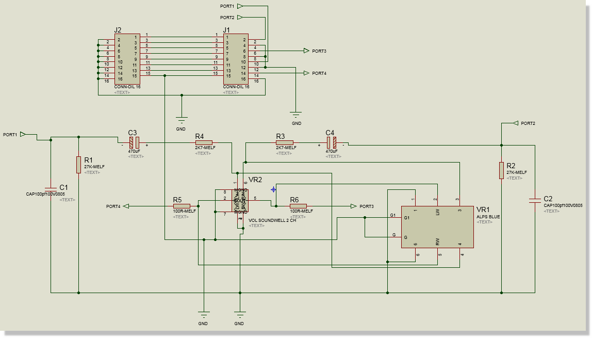
On the layout side, you will have five clips in the parts bin, each of which will place as a single entity with the correct annotation.
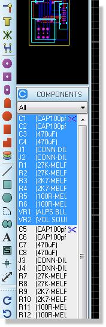
If you decide to add another channel (e.g. CHANNEL6) once the project clip has been imported you will need to place the sub-circuit and import the project clip into it manually. It's best to set up all the empty sub-circuits with the same name and then import the project clip into one of them.
If you haven't set a sheet annotation offest and then decide you want one later, you can use the annotator in ARES or the annotator in ISIS in branch mode as decribed above.
Suitable for duplication of sub-circuits containing sub-circuits (multi-level hierarchy).
Suitable for re-use between projects.
The following process shows how to duplicate circuitry inside a project :
Place the first sub-circuit and lay out the circuitry.
Edit the circuit name and sheet name to reflect the contents of the sub-circuit
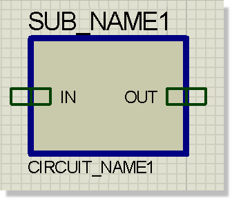
The Circuit inside SUB_NAME1 also contains a sub circuit which in turn contains another circuit:
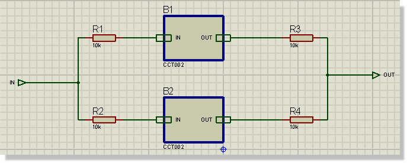
Block copy the sub-circuit on the root sheet (the top level of the hierarchy branch) as many times are required and rename the sheet. Do not rename the circuit as this is the binding.
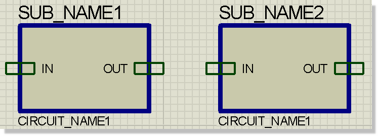
The two sheets now contain the same circuit. Making a change to one will also make the same change in the other one.
Note that at this stage you will have duplicate annotations in the various sheets. You need to run the Annotator in global mode to generate unique annotations for all of the copies. If you prefer, you can work in branch mode inside each circuit with a different annotation count. This will set sheet annotation for you.
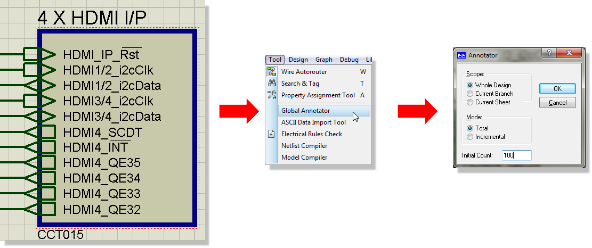
OR
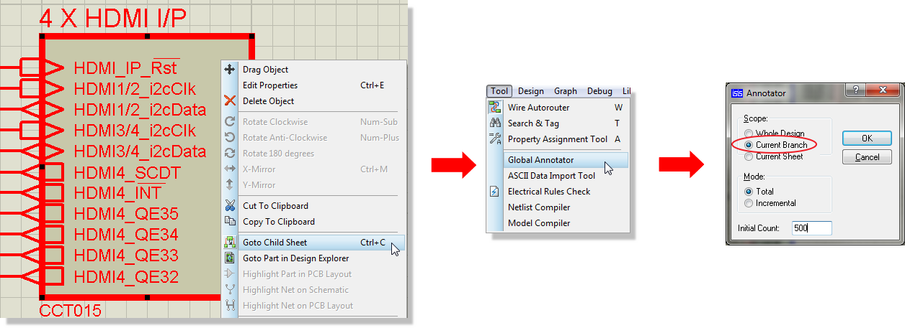
See Also
Place and track the first section of circuitry in ARES. It's easiest if you do this in open space for now so that you can easily select it.
Carefully draw a selection box around the circuitry and invoke the replicate command. If the Bind command is disabled, you have selected parts not contained in the sub-circuit. Select the second sheet to bind to, an X-Y offset for the placement.
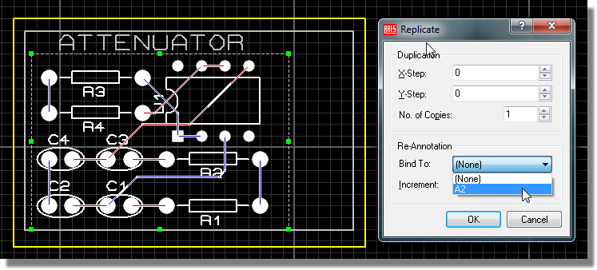